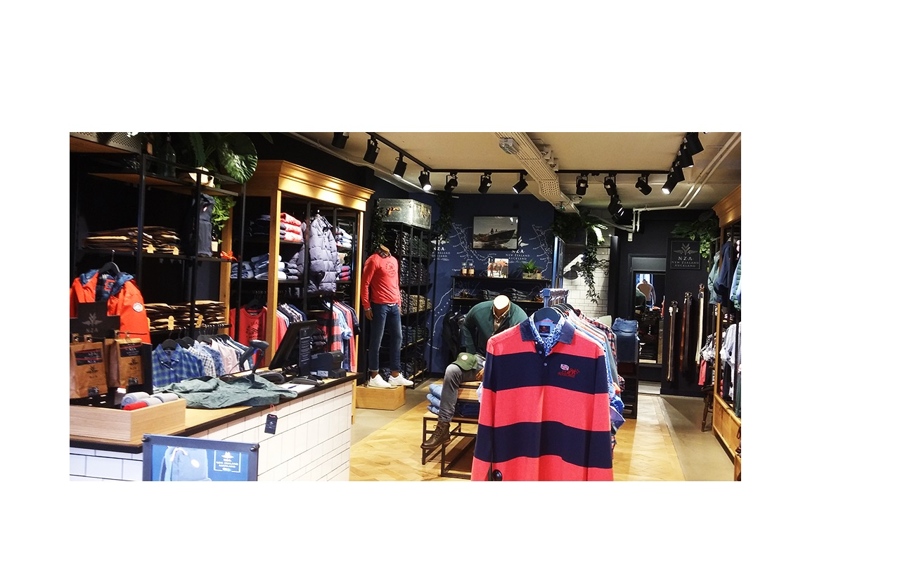

Oude stad has a rich history and amazing place to visit. It is exactly in the middle of Haarlem which also known as Burgundian city in the north. So, if you are planning to have a short trip at Oude stad here are some good tips for you. You should not miss to visit The Grote or Sint-Bavokerk which is the second largest church in The Dutch city of Haarlem. You can use the link bellow to have information about ticket to visit the church.
Museum
Tylers Museum
Teylers Museum is an art, science and Natural history museum in Netherlands. It is Established in 1778 and one of the finest attraction for the travelers. What you can able to see is a state portrait of a boy in his Easter best, ERNST HAECKEL- Art from in nature, Rembrandt’s World etc. You can also have an experience with The Lorentz Formula in the Lorentz Lab. Every fossil, mineral, scientific instrument, book, coin, painting or drawing tells its own story. It’s pretty close to the center of Haarlem and easy to be roaming around. So, if you would like to book a ticket easiest way to buy a group ticket and for more information visit the website bellow. Remember, on 14th of September is a Heritage Day and in that day, you can have a free entrance inside the Museum.
The Golden street
Shops
Are you looking for to buy varieties of cloth then the historic center of Haarlem has great variety of shops. Even back Haarlem was the center of trade and shopping It is renowned as the Golden street where you can find your daily groceries things, cloths, jewelry etc. Every weekend, in front of the St. Bravo church there held an open market from where you can buy cloth, groceries in a reasonable price. In the shopping street you will find a lot of brand shops and if you are looking for something unique, something special you can also find it from here. Be quicker so that you can taste the atmosphere of Golden Street. Point to be noted that, shops are usually open from Monday to Saturday at 9AM to 5PM except Monday when shops generally open at 1PM. So, for more update follow the bellow link.

Tourist Spot
If you are in Netherlands and did not get a chance to have a boat ride yet then you are in the perfect place to have a canal ride. Oude stad has some beautiful canals and this is a unique style to see the nature, monuments and beautiful architecture in Haarlem. You can join a canal trip in an open boat which I should say very friendly atmosphere. You can gossip with each others about art, history, architecture while travelling. Give your visit to Oude stad to an extra dimension and it’s really worthy. You can get lost easily in the city center so it is important to always have a leaflets and routes so that you can easily understand where are you exactly.
Under the guidance of EGJJF trainer M. van der Meer, our program has been specially developed for youth (14 years +) and adults. Due to the approachable approach of the training, the Brazilian Jiu Jitsu can be directly applied effectively and responds to the needs and perceptions of young people and adults through the personal approach.
Sports club HLC is an association in Haarlem and immediate surroundings where boys and girls can go for gymnastics, guppie gym & gymkids, dance, acrogym and circus. For adults, HLC has keepfit classes, yoga and recreational badminton for women.
This club is all about specializes in Japanese martial arts. Munen Muso means: without thought, without intention, a concept from Zen and budo philosophy that only becomes clear after many hours of training.
It's a sport club with multiple sports.Olympia Haarlem wants to give its youth training a boost by training all youth trainers. Youth football training always fully responds to the specific wishes of the policymakers when implementing this unique internal training
Bato was founded on March 5, 1896 as a gymnastics and fencing club. Since then, Bato has had several disciplines within the club, such as handball, trampoline jumping, men's gymnastics and even tug of war.
Whatever your level,whatever your goal is,together we will ensure that you reach your goal(s)! Do you need support to become faster,do you want to improve your running technique ? Or do you train for a certain distance?
Personal attention, flexibility, service and above all professional guidance and tailor-made sports programs for every purpose. They strive for lasting results, obtained through simple changes in your lifestyle.
The city of Haarlem has produced many well-known athletes. Top athletes, who have gained eternal value through their performance at the highest level. Such as Kick Smit, Tom Okker and Yvonne van Gennip. Or like Dennis van der Geest, Floris Jan Bovenlander and Jessica Gal. Sport pioneer Pim Mulier of course. And all those other 'Helden van Haarlem' who have played an indelible role of significance in the (international) sports world.
Referral
Zelfverdediging
More than half the Dutch population participates in sport on a weekly basis and sports clubs are intended to persuade more people to take part in sport and expresses a clear vision and strategy, has a strong content and is future proof.But the Dutch can practice just about any sport to their heart's content, thanks to sport is extremely well organised thanks to a dense network of sport clubs.